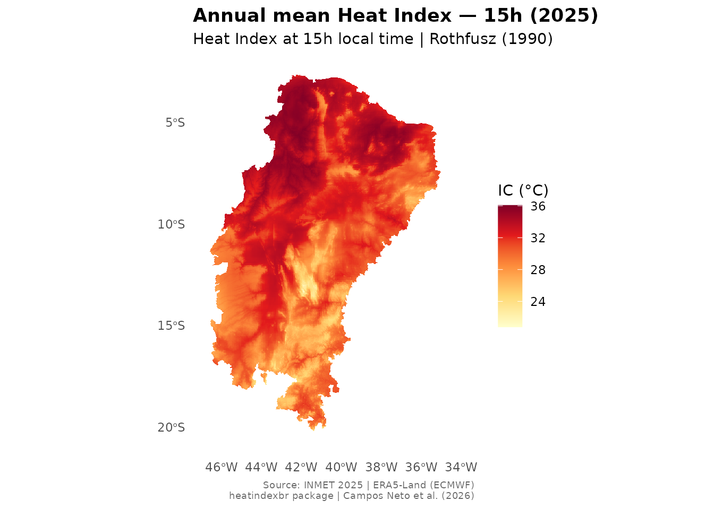

heatindexbr provides spatially interpolated Heat Index
(Rothfusz 1990) rasters at ~1 km resolution for the 1,477 municipalities
of Brazil’s official Semiarid region (CONDEL/SUDENE Resolution
176/2024). This vignette walks through the core workflow: search →
download → extract → plot.
What data is available?
Use hi_available() to see the years, resolutions, and
synoptic hours currently distributed:
hi_available()
#> ℹ Repository: <https://doi.org/10.5281/zenodo.20942619>
#> ℹ Use `hi_download()` to access available products.
#> year resolution hours status
#> 1 2025 annual 00h, 09h, 15h, 21h available
#> 2 2025 monthly 00h, 09h, 15h, 21h (Jan-Dec) in preparation
#> 3 2025 daily 00h, 09h, 15h, 21h (all 365 days) in preparation
#> 4 2025 hourly all hours in preparationSearching for municipalities
Municipality names in heatindexbr follow the IBGE
convention: uppercase without accents. Use
hi_search() to find the correct name:
# Case-insensitive partial match
hi_search("Mossoro", state = "RN")
#> code_muni name_muni abbrev_state
#> 500 2408003 MOSSORO RN
hi_search("Campina Grande", state = "PB")
#> code_muni name_muni abbrev_state
#> 904 2504009 CAMPINA GRANDE PBImportant: Always use the
name_munivalue returned byhi_search()when callinghi_municipality(). For example,"MOSSORO", not"Mossoró".
Extracting Heat Index for a municipality
hi_municipality() downloads the raster (cached on first
use), crops it to the municipality boundary, and returns summary
statistics with NOAA classification:
result <- hi_municipality("MOSSORO", state = "RN", hour = "15h")
result
#> code_muni name_muni abbrev_state mean hour year resolution
#> 1 2408003 MOSSORO RN 34.22216 15h 2025 annual
#> noaa_class
#> 1 Extreme cautionThe noaa_class column uses the standard NOAA Heat Index
thresholds:
| Class | IC range | Risk |
|---|---|---|
| No caution | < 27°C | Low |
| Caution | 27–32°C | Fatigue with prolonged exposure |
| Extreme caution | 32–41°C | Heat cramps or exhaustion possible |
| Danger | 41–54°C | Heat exhaustion likely |
| Extreme danger | > 54°C | Heat stroke imminent |
You can retrieve all four synoptic hours at once by leaving
hour = NULL:
hi_municipality("MOSSORO", state = "RN", hour = NULL)Downloading and plotting the full raster
hi_download() returns a SpatRaster (terra
package). The raster is downloaded once and cached in your user data
directory:
r <- hi_download(year = 2025, hour = "15h")
#> ✔ Using cached:
#> /home/runner/.cache/R/heatindexbr/IC_2025_annual_all.tif
r
#> class : SpatRaster
#> size : 1983, 1299, 1 (nrow, ncol, nlyr)
#> resolution : 999.7408, 999.9794 (x, y)
#> extent : 5799573, 7098237, 7714924, 9697883 (xmin, xmax, ymin, ymax)
#> coord. ref. : SIRGAS 2000 / Brazil Polyconic (EPSG:5880)
#> source : IC_2025_annual_all.tif
#> name : IC_15h
#> min value : 20.407417
#> max value : 36.131783Pass the raster directly to hi_plot() for a ready-to-use
map:
hi_plot(r,
title = "Annual mean Heat Index — 15h (2025)",
hour = "15h",
year = 2025)
#> <SpatRaster> resampled to 501000 cells.
Extracting for a custom polygon
If you have your own sf object (e.g. a watershed, a
state boundary, or a study area), use hi_shape():
Technical note on the raster
The underlying raster (IC_2025_annual_all.tif) is stored
in EPSG:5880 (SIRGAS 2000 / Brazil Polyconic) — the
appropriate projected CRS for Brazil. Do not use the WGS84 version,
which has a clipping artifact on the eastern boundary. See
vignette("methodology") for full details on the
interpolation method.
Citation
If you use heatindexbr in your research, please
cite:
citation("heatindexbr")Or cite the Zenodo dataset directly:
Campos Neto, A. (2025). heatindexbr: Heat Index rasters for Brazil’s Semiarid region (v0.1.0). Zenodo. https://doi.org/10.5281/zenodo.20942619